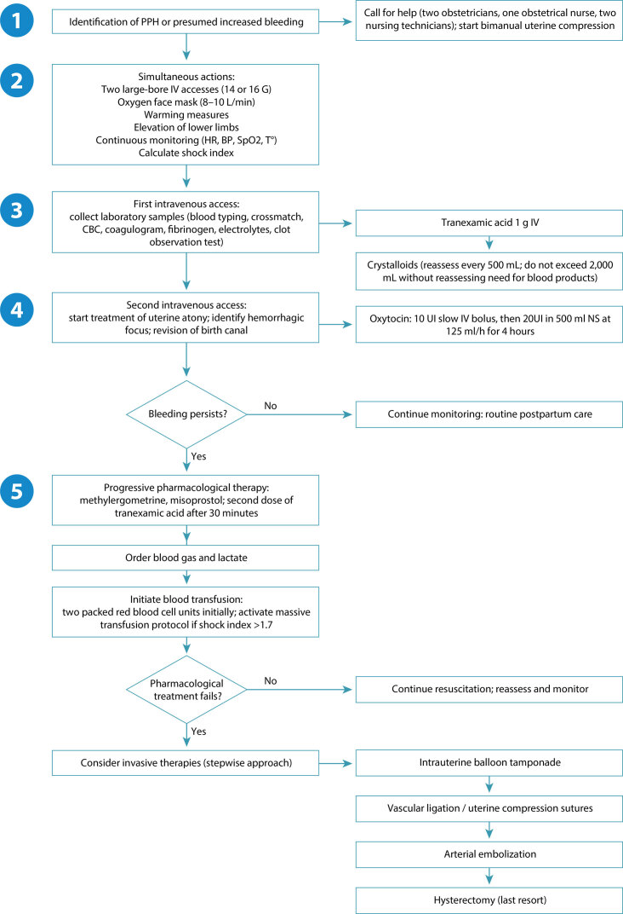
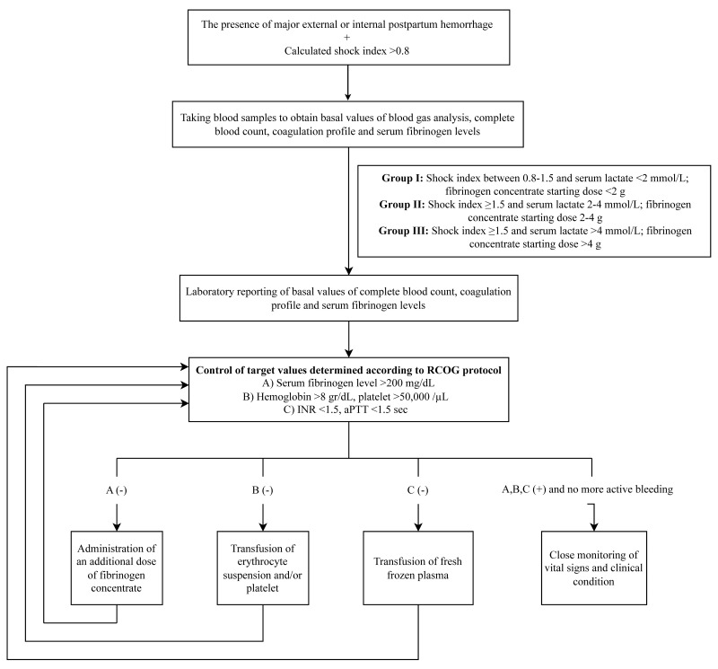
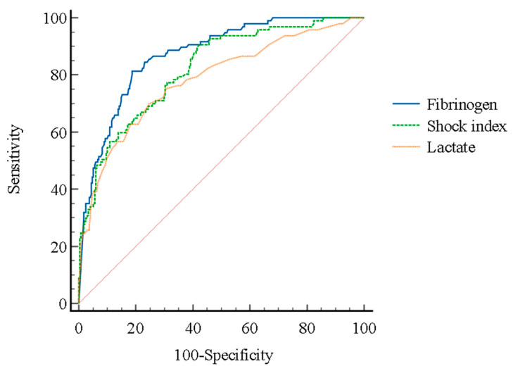
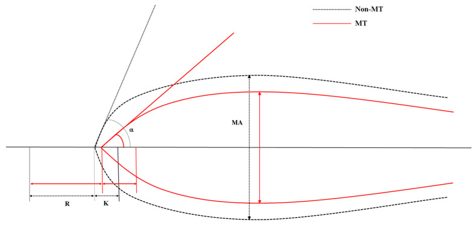

1932 — Truyền máu khối lượng lớn và rối loạn đông máu trong băng huyết sau sinh / Massive transfusion and coagulopathy in postpartum hemorrhage
Tags: pattern:chay-mau pattern:mat-mau-o-at pattern:dong-mau-noi-mach pattern:soc-giam-the-tich vung:tu-cung-phan-phu protocol:phe-duyet-truyen-mau protocol:CT-bung protocol:ROTEM score:shock-index score:4T
Mức chắc chắn (certainty): tổng hợp y văn (literature synthesis) — ghép 1 khuyến cáo quản lý máu chu sinh (Rev Bras Ginecol Obstet 2026, PMC13399376), 1 nghiên cứu đoàn hệ 364 ca băng huyết sau sinh tại khoa cấp cứu (J Pers Med 2024, PMC11050853), 1 nghiên cứu tiến cứu 40 ca về fibrinogen theo giờ (Cureus 2024, PMC11557738), 1 nghiên cứu 31 ca về lactate–fibrinogen dự báo truyền máu khối lượng lớn (2020, PMC6971467), 1 nghiên cứu 184 ca về TEG (J Pers Med 2024, PMC11050950), 1 phác đồ fibrinogen sớm theo sốc–lactate (2025, PMC12591932), 1 tổng quan can thiệp nội mạch theo nguyên nhân chảy máu (2026, PMC12504023) và 2 thử nghiệm ngẫu nhiên lớn (WOMAN 2017, PMID 28456509; PROPPR 2015, PMID 25647203). Không có thử nghiệm ngẫu nhiên nào về tỷ lệ 1:1:1 trong sản khoa — bằng chứng tỷ lệ đến từ chấn thương, đây là giới hạn thật của số liệu.
1. Tổng quan bệnh học – cơ chế hình ảnh
- Vì sao băng huyết sau sinh (postpartum hemorrhage, PPH) gây rối loạn đông máu nhanh hơn chấn thương: thai kỳ có thể tích huyết tương tăng và fibrinogen tăng — đạt đỉnh ~5 g/L ở tam cá nguyệt III (so với 2,0–4,5 g/L ngoài thai) (PMC11557738). Nghĩa là một fibrinogen "bình thường" 2,5 g/L ở sản phụ đang chảy máu là đã cạn; ngưỡng hành động vì thế không phải 1,5 g/L như người không mang thai mà là 2 g/L.
- Bốn cơ chế cùng lúc (tứ giác tử vong — lethal diamond):
- Pha loãng (dilutional): dịch tinh thể và hồng cầu khối không chứa yếu tố đông máu.
- Tiêu thụ (consumptive): nhau bong non, nhau cài răng lược (PAS), vỡ tử cung, thuyên tắc ối — tiêu thụ fibrinogen và tiểu cầu tại chỗ.
- Tăng tiêu sợi huyết (hyperfibrinolysis): đặc biệt trong thuyên tắc ối và sốc kéo dài.
- Mất cân bằng nhiệt–toan–canxi: hạ nhiệt < 35 °C, pH < 7,2, canxi ion < 1,0 mmol/L làm giảm hoạt tính enzym và co mạch; đây là phần bị bỏ quên nhiều nhất vì không nằm trong bất kỳ ống nghiệm đông máu thường quy nào.
- Vì sao fibrinogen là chỉ số sớm nhất: fibrinogen là cơ chất cuối của dòng thác; nồng độ giảm sớm và tuyến tính với lượng máu mất, trong khi PT/aPTT chỉ kéo dài khi đã mất > 30–40% yếu tố. Vì vậy PT/aPTT bình thường không loại trừ rối loạn đông máu trong PPH.
- Ngưỡng định lượng bắt buộc nhớ:
- Fibrinogen < 2 g/L = ngưỡng thay thế fibrinogen (khuyến cáo mạnh, bằng chứng trung bình–cao) (PMC13399376).
- FIBTEM A5 < 12 mm trên ROTEM là ngưỡng tương đương; liều fibrinogen 25–50 mg/kg (~2–4 g) (PMC13399376).
- Fibrinogen 2,35 g/L ở giờ 0 dự báo PPH nặng với độ nhạy 96%, độ đặc hiệu 88,2%; 2,0 g/L ở giờ 1 cũng 96%/88,2%; fibrinogen 2–3 g/L đã làm tăng gần gấp đôi nguy cơ PPH nặng (PMC11557738).
- Dự báo cần truyền máu khối lượng lớn (MT): fibrinogen AUC 0,871, shock index AUC 0,821, lactate AUC 0,784; cắt 400 mg/dL → độ nhạy và giá trị tiên đoán âm 100%; cắt 100 mg/dL → độ đặc hiệu 91,8%, giá trị tiên đoán dương 70,7% (PMC11050853).
- Lactate cắt 4 mmol/L và fibrinogen cắt 211 mg/dL dự báo MT với AUC 0,734 và 0,814 (PMC6971467).
- TEG: góc α < 60°** là yếu tố dự báo MT độc lập (**OR 7,769**; KTC 95% **2,736–22,062**), cùng **lactate (OR 1,674)** và **SI > 0,9 (OR 4,638); góc α < 60° có độ nhạy 73,5%, độ đặc hiệu 72,0%, giá trị tiên đoán âm 92,3% (PMC11050950).
- Định nghĩa và tần suất (để hiểu quy mô): MT thường định nghĩa ≥ 10 đơn vị hồng cầu khối trong 24 giờ (một số nghiên cứu dùng ≥ 8 đơn vị). Trong đoàn hệ quốc gia Hà Lan, PPH cần MT gặp 65/100.000 ca sinh; lượng máu mất trung vị 6.000 mL; cắt tử cung chu sinh 30%; tử vong 2,3% (PMID 30667050). Tại khoa cấp cứu, 26,6% ca PPH nguyên phát phải MT (PMC11050853) và 18,5% trong một đoàn hệ TEG (PMC11050950).
- TẠI SAO hình ảnh vẫn cần trong một bài "đông máu": rối loạn đông máu không gây chảy máu nếu không có nguồn chảy. Trước khi truyền thêm 10 đơn vị máu, phải trả lời "nguồn ở đâu" bằng CTA có cản quang: thoát mạch ≥ 100 HU (iod, Z = 53) so với máu tụ 40–60 HU; chụp không cản quang không phân biệt được (bài 1728). ĐM buồng trứng chỉ thấy trên chụp ĐM chủ ở ~20% ca, cần CE-CT để không bỏ sót nguồn (PMC12504023).
- TẠI SAO hình ảnh có thể "làm chậm" và khi nào chấp nhận: CT ở bệnh nhân đang sốc làm tụt huyết áp do nằm ngửa và thuốc cản quang; chỉ chụp khi huyết động ổn định hoặc trong phòng cấp cứu lai (hybrid ER) có bàn CT, với truyền máu chạy song song (PMC12504023).
2. Mẫu hình + chẩn đoán phân biệt theo vị trí (Gamut)
Bài này gamut theo cơ chế đông máu, không theo vị trí giải phẫu — vì cùng một hình ảnh "còn chảy máu sau khâu" có 6 nguyên nhân khác nhau và chỉ 2 trong 6 sửa được bằng truyền máu.
- Mất máu chưa bù đủ (under-resuscitation): mạch nhanh, SI tăng, lactate tăng, Hb có thể bình thường giờ đầu → truyền máu + kiểm soát nguồn.
- Pha loãng: đã truyền > 1.500–2.000 mL tinh thể mà không đáp ứng → bắt đầu truyền máu theo tỷ lệ (PMC13399376).
- Tiêu thụ (DIC sản khoa): nhau bong non, thuyên tắc ối, PAS, thai chết lưu, tiền sản giật/HELLP → giảm cả fibrinogen và tiểu cầu, D-dimer tăng rất cao.
- Tăng tiêu sợi huyết: chảy máu không cầm dù fibrinogen đã bù, cục máu tan nhanh, TEG LY30 cao → cân nhắc tranexamic acid (đúng cửa sổ 3 giờ).
- Thiếu hụt bẩm sinh: bệnh von Willebrand, afibrinogenemia/hipofibrinogenemia, hemophilia carrier → tiền sử chảy máu, aPTT/PT bất thường từ trước.
- Thuốc: kháng đông (LMWH/warfarin/DOAC), kháng tiểu cầu → hỏi thuốc trước khi quy cho "đờ tử cung".
- Nguyên nhân ngoại khoa thuần (surgical bleeding): rách cổ tử cung/âm đạo, sót nhau, vỡ tử cung, khuyết thành → không đáp ứng với bất kỳ đơn vị máu nào; phải mổ/nút mạch (bài 1728, 1927).
Gamut theo "còn chảy dù đã xử lý" — 3 câu hỏi theo thứ tự:
- Nguồn đã kiểm soát chưa? (nếu chưa → mổ/IR, không truyền thêm mù)
- Fibrinogen và canxi ion bao nhiêu? (nếu < 2 g/L hoặc < 1,0 mmol/L → sửa ngay)
- Còn tăng tiêu sợi huyết/thiếu yếu tố nào? (TEG/ROTEM quyết định)
3. Bảng so sánh phân biệt (ma trận đối chiếu)
| Thực thể (entity) | Dấu hiệu điển hình (xét nghiệm/hình ảnh) | Chốt vào (rule-in) | Chốt loại (rule-out) | Gợi ý xác nhận |
|---|---|---|---|---|
| Mất máu chưa bù đủ | SI ↑ (> 0,8 vào phác đồ; > 1,7 kích hoạt MT), lactate ↑ (> 2, cắt 4 mmol/L), Hb có thể bình thường giờ đầu | SI tăng + lactate tăng + đáp ứng với truyền | Hb bình thường không loại trừ; nhưng SI bình thường + lactate bình thường + không chảy → không phải | Đo lại SI mỗi 15 phút; khí máu |
| Pha loãng do dịch | Đã truyền > 1.500–2.000 mL tinh thể, PT/aPTT dài, fibrinogen giảm | Tinh thể > 2.000 mL mà không đáp ứng | Chưa truyền dịch nhiều → chưa thể là pha loãng | Khởi động MT theo tỷ lệ; bù canxi |
| DIC sản khoa (tiêu thụ) | Fibrinogen ↓, tiểu cầu ↓, D-dimer/FDP tăng rất cao, PT/aPTT dài | Fibrinogen < 2 g/L + tiểu cầu < 100.000/mm³ + D-dimer tăng | Fibrinogen và tiểu cầu bình thường → không phải DIC | Xử lý nguyên nhân (lấy thai, mổ) + bù fibrinogen/tiểu cầu |
| Tăng tiêu sợi huyết | Cục máu tan nhanh, LY30 cao trên TEG, chảy không cầm dù fibrinogen đủ | LY30 cao + chảy tiếp sau khi fibrinogen > 2 g/L | Fibrinogen thấp đơn thuần → sửa fibrinogen trước | Tranexamic acid 1 g IV, nhắc 1 g sau 30 phút (bài 1) |
| Thiếu hụt bẩm sinh (vWD, afibrinogenemia) | Tiền sử chảy máu, aPTT/PT bất thường từ trước, fibrinogen rất thấp | Tiền sử + xét nghiệm bất thường trước sinh | Khởi phát hoàn toàn trong 24 giờ sau sinh → nghĩ mắc phải | Yếu tố VIII/vWF, fibrinogen; huyết học |
| Nguyên nhân ngoại khoa (rách, vỡ, sót nhau) | CTA: thoát mạch ≥ 100 HU, máu tụ 40–60 HU, khuyết thành cơ | Thoát mạch hoặc khuyết thành trên CTA/US | CTA không thấy nguồn + huyết động ổn → tối ưu đông máu trước | Mổ/nút mạch (bài 1927, 1728) |

Năm bước: nhận diện → hai đường truyền lớn + ấm + nâng chân + tính SI → xét nghiệm (nhóm máu, đông máu, fibrinogen, khí máu) + TXA 1 g → oxytocin và xác định nguồn → truyền 2 đơn vị hồng cầu, kích hoạt MT khi SI > 1,7, rồi leo thang bóng chèn → thắt mạch/mô khâu → nút mạch → cắt tử cung. Nguồn: Rev Bras Ginecol Obstet 2026 (PMC13399376), CC BY 4.0.Ngưỡng đích trong hồi sức cầm máu (một bảng, dùng ngay tại giường)
| Thông số | Đích | Ghi chú |
|---|---|---|
| Huyết sắc tố | > 8 g/dL khi đang chảy; < 7 g/dL nếu ổn định | Ngưỡng thấp hơn chỉ dùng khi hết chảy (PMC13399376) |
| Fibrinogen | > 2 g/L (200 mg/dL) | Hoặc FIBTEM A5 > 12 mm |
| Tiểu cầu | > 50.000/mm³ (> 100.000 nếu đang chảy tích cực) | |
| INR | ≤ 1,5 | |
| Canxi ion | > 1,0 mmol/L | Bù canxi theo từng đơn vị máu |
| Nhiệt độ | > 35 °C | Tránh hạ nhiệt |
| pH / kiềm dư / lactate | pH > 7,2, BE > −6 mmol/L, lactate < 2 mmol/L |
4. Protocol chụp + hệ phân độ/điểm chuẩn hóa
4.1. Trình tự hồi sức (không chờ kết quả)
- Gọi trợ giúp (2 sản khoa, 1 nữ hộ sinh, 2 điều dưỡng) + ấn tử cung hai tay (PMC13399376).
- Hai đường truyền lớn 14–16 G, oxy, ủ ấm, nâng chân, theo dõi mạch–HA–SpO₂–nhiệt độ, tính SI ngay.
- Xét nghiệm: nhóm máu + hòa hợp, công thức máu, đông máu, fibrinogen, điện giải, khí máu (lactate, canxi ion); kèm TEG/ROTEM nếu có.
- Tranexamic acid 1 g IV trong 3 giờ đầu, nhắc 1 g nếu còn chảy hoặc chảy lại trong 24 giờ.
- Oxytocin 10 IU IV chậm + truyền duy trì; xác định và sửa nguồn chảy (soi âm đạo, siêu âm, mổ).
- Truyền 2 đơn vị hồng cầu khối khi bắt đầu truyền máu; kích hoạt MT khi SI > 1,7; tỷ lệ 1:1:1 (hồng cầu:tươi:tiểu cầu) theo quy ước.
- Bù fibrinogen sớm khi < 2 g/L hoặc FIBTEM A5 < 12 mm: 25–50 mg/kg (~2–4 g); có thể dùng tủa lạnh 8–10 đơn vị (tăng ~0,5–1,0 g/L) nếu không có fibrinogen cô đặc.
- Bù canxi ion > 1,0 mmol/L, giữ nhiệt > 35 °C, sửa toan.
- Kiểm soát nguồn: bóng chèn → mô khâu chèn → thắt ĐM tử cung/ĐM chậu trong → nút mạch → cắt tử cung (bài 1927, 1728).
4.2. Phác đồ fibrinogen theo sốc–lactate (khi chưa có kết quả)
flowchart TD
A[Băng huyết sau sinh nặng, SI > 0,8] --> B[Lấy máu: khí máu, đông máu, fibrinogen]
B --> C{SI và lactate}
C -->|SI 0,8-1,5 và lactate < 2| D[Fibrinogen khởi đầu < 2 g]
C -->|SI ≥ 1,5 và lactate 2-4| E[Fibrinogen khởi đầu 2-4 g]
C -->|SI ≥ 1,5 và lactate > 4| F[Fibrinogen khởi đầu > 4 g]
D --> G[Kiểm tra đích: fibrinogen > 2 g/L, Hb > 8, tiểu cầu > 50.000, INR ≤ 1,5]
E --> G
F --> G
G --> H{Đạt đích?}
H -->|Chưa| I[Bổ sung fibrinogen / hồng cầu / tiểu cầu / tươi theo đích thiếu]
I --> G
H -->|Rồi, còn chảy| J[Kiểm soát nguồn: mổ hoặc nút mạch]
H -->|Rồi, hết chảy| K[Theo dõi sát: SI, lactate, fibrinogen, nước tiểu]
Cơ sở: phác đồ dùng SI và lactate để quyết định liều fibrinogen trước khi có kết quả xét nghiệm; nhóm liều > 4 g có vào ICU 23,8% so với 62,1% ở nhóm < 2 g (P = 0,020), ít can thiệp ngoại khoa thứ phát và ít truyền máu hơn, không có biến cố huyết khối hay tử vong trong 103 ca (PMC12591932). Đây là dữ liệu hồi cứu, không phải bằng chứng nhân quả.
4.3. Bằng chứng của hai can thiệp chính (đọc đúng dân số)
| Can thiệp | Dân số | Kết quả | Đọc thế nào |
|---|---|---|---|
| Tranexamic acid 1 g (WOMAN, 20.060 sản phụ) | PPH sau sinh đường âm đạo/mổ lấy thai | Tử vong do chảy máu 1,5% vs 1,9% (RR 0,81; KTC 95% 0,65–1,00; p = 0,045); trong 3 giờ RR 0,69 (0,52–0,91; p = 0,008) | Dùng càng sớm càng tốt; sau 3 giờ không còn lợi ích rõ |
| Tỷ lệ 1:1:1 (PROPPR, 680 bệnh nhân chấn thương) | Chấn thương nặng, mất máu ồ ạt | Tử vong 24 giờ 12,7% vs 17,0% (p = 0,12); 30 ngày 22,4% vs 26,1% (p = 0,26); chết do mất máu 9,2% vs 14,6% (p = 0,03); đạt cầm máu 86% vs 78% (p = 0,006) | Không phải thử nghiệm sản khoa; trong sản khoa đây là quy ước thực hành, không phải bằng chứng cấp 1 |
4.4. Hình ảnh: khi nào chụp, chụp gì
- Huyết động không ổn: không CT — siêu âm tại giường + mổ.
- Huyết động ổn, chưa rõ nguồn: CTA bụng–chậu (thì động mạch + tĩnh mạch cửa); đọc thoát mạch ≥ 100 HU, máu tụ 40–60 HU, giả phình giữ nguyên hình thì muộn.
- Sau nút mạch vẫn chảy: CE-CT tìm ĐM buồng trứng/động mạch dây chằng tròn — chỉ 20% thấy được ĐM buồng trứng trên chụp ĐM chủ (PMC12504023).
- Sau mổ: CT khi Hb giảm tiếp, sốt, đau bụng — tìm máu tụ, hoại tử, rò, thoát mạch còn.
5. Biến thể bình thường và cạm bẫy
- Hb bình thường giờ đầu KHÔNG loại trừ mất máu ồ ạt. Hb chỉ giảm khi pha loãng xảy ra; dùng SI, lactate, lượng máu mất ước tính. Ca kinh điển: SI 1,07 với Hb 12,6 g/dL (bài 1728).
- Fibrinogen 2,5 g/L ở sản phụ đang chảy là BẤT THƯỜNG. Ngưỡng thay thế là < 2 g/L; 2–3 g/L đã tăng gần gấp đôi nguy cơ PPH nặng (PMC11557738). Đừng so với khoảng tham chiếu của người không mang thai.
- PT/aPTT bình thường không loại trừ rối loạn đông máu: các yếu tố chỉ kéo dài PT khi đã mất > 30–40%; fibrinogen và TEG nhạy hơn.
- Bỏ quên canxi ion: truyền nhiều máu có citrat → canxi ion < 1,0 mmol/L → tim co yếu, mạch giãn, đông máu kém; bù canxi theo từng đơn vị máu, không chờ triệu chứng.
- Bù fibrinogen mà không kiểm soát nguồn: truyền 10 đơn vị máu cho một khuyết thành tử cung hay rách cổ tử cung là truyền vô ích; CTA/US trước hoặc mổ.
- Truyền quá tay: TACO/TRALI và tăng thể tích ở sản phụ (đặc biệt tiền sản giật) — dùng ngưỡng hạn chế (< 7 g/dL) khi đã ổn định.
- Tranexamic acid muộn: sau 3 giờ không còn giảm tử vong do chảy máu; dùng muộn không thay thế được kiểm soát nguồn.
- 1:1:1 không phải "chân lý": nguồn gốc là chấn thương (PROPPR); trong sản khoa, fibrinogen-first + kiểm soát nguồn đang được ưu tiên hơn là đổ tỷ lệ cứng.
- Số liệu nhỏ, đừng suy rộng: phác đồ fibrinogen theo SI/lactate là 103 ca hồi cứu; nghiên cứu lactate–fibrinogen là 31 ca; hãy đọc hướng chứ không đọc con số tuyệt đối.
6. Tự lượng giá — Blind Quiz
Ca 1 — Sản phụ 28 tuổi, sau sinh đường âm đạo 40 phút, đờ tử cung; đã oxytocin + misoprostol, còn chảy. Mạch 118, HA 92/56, Hb 11,8 g/dL.
- Câu hỏi: Tính SI. Hb 11,8 g/dL có loại trừ mất máu nặng không? Bước nào trong lưu đồ phải làm ngay?
Bấm để hiện đáp án (findings + chẩn đoán)
- Tính toán: SI = 118/92 = 1,28 → sốc vừa (ngưỡng vào phác đồ > 0,8; > 1,7 là kích hoạt MT).
- Hb: không loại trừ — Hb chưa pha loãng trong giờ đầu; SI và lactate mới phản ánh mất máu cấp.
- Việc phải làm: hai đường truyền lớn, TXA 1 g IV trong 3 giờ, xét nghiệm fibrinogen + khí máu, xác định nguồn chảy (soi âm đạo), bóng chèn nếu buồng kín; truyền hồng cầu khi bắt đầu truyền máu.
- Nguồn ảnh: Rev Bras Ginecol Obstet 2026 (PMC13399376), CC BY 4.0.
Ca 2 — Cùng bệnh nhân sau 90 phút: vẫn chảy, fibrinogen 1,4 g/L, lactate 5,2 mmol/L, SI 1,9.

- Câu hỏi: Vào nhóm nào của phác đồ? Liều fibrinogen bao nhiêu? Vì sao không chờ kết quả đông máu đầy đủ?
Bấm để hiện đáp án (findings + chẩn đoán)
- Nhóm: SI ≥ 1,5 và lactate > 4 mmol/L → nhóm III, fibrinogen khởi đầu > 4 g.
- Liều theo cân nặng: 25–50 mg/kg (~2–4 g); nhóm > 4 g trong nghiên cứu có vào ICU 23,8% so với 62,1% ở nhóm < 2 g.
- Vì sao không chờ: fibrinogen là yếu tố giảm sớm nhất; kết quả đông máu đầy đủ mất 30–60 phút, trong khi mất máu tiếp tục. Đích sau bù: fibrinogen > 2 g/L, canxi ion > 1,0 mmol/L, nhiệt > 35 °C, pH > 7,2.
- Song song: kiểm soát nguồn (bóng chèn → mô khâu → thắt mạch/nút mạch).
- Nguồn ảnh: 2025 (PMC12591932), CC BY-NC-ND 4.0.
Ca 3 — Sản phụ chảy máu ồ ạt; kết quả khí máu và ROC dự báo truyền máu khối lượng lớn.

- Câu hỏi: Đường nào dự báo MT tốt nhất? Fibrinogen 400 mg/dL nói lên điều gì? Lactate 4 mmol/L có ý nghĩa gì?
Bấm để hiện đáp án (findings + chẩn đoán)
- Đường tốt nhất: fibrinogen (AUC 0,871) > shock index (0,821) > lactate (0,784).
- 400 mg/dL: ở ngưỡng này độ nhạy và giá trị tiên đoán âm đều 100% — nghĩa là fibrinogen ≥ 400 mg/dL gần như loại trừ nhu cầu MT; nhưng không dùng để chọn người cần truyền.
- 100 mg/dL: độ đặc hiệu 91,8%, giá trị tiên đoán dương 70,7% → rất gợi ý MT.
- Lactate 4 mmol/L: ngưỡng cắt dự báo MT trong nghiên cứu 31 ca (AUC 0,734), phản ánh giảm tưới máu mô, không phải chỉ là "toan".
- Nguồn ảnh: J Pers Med 2024 (PMC11050853), CC BY 4.0.
Ca 4 — Bệnh nhân có TEG ngay khi vào cấp cứu; so sánh nhóm không cần MT và nhóm cần MT.

- Câu hỏi: Thông số nào tách hai nhóm rõ nhất? Vì sao góc α phản ánh fibrinogen? Ngưỡng nào dự báo MT?
Bấm để hiện đáp án (findings + chẩn đoán)
- Thông số tách rõ: góc α (tốc độ hình thành cục máu) — nhóm MT có góc α nhỏ hơn (đường liền dốc thoải hơn, đạt biên độ muộn hơn).
- Vì sao: góc α phản ánh tốc độ trùng polymer fibrin, phụ thuộc trực tiếp nồng độ fibrinogen và hoạt tính thrombin; MA phản ánh độ bền cục máu (tiểu cầu + fibrin).
- Ngưỡng: góc α < 60°** → **OR 7,769** (2,736–22,062); **độ nhạy 73,5%, độ đặc hiệu 72,0%, NPV 92,3%**; kèm **SI > 0,9 (OR 4,638) và lactate (OR 1,674).
- Nguồn ảnh: J Pers Med 2024 (PMC11050950), CC BY 4.0.
Bài liên quan chéo
- 1927 – Thắt ĐM tử cung (O'Leary) và thắt ĐM chậu trong khi băng huyết sau sinh không cầm
- 1728 – Chảy máu sau vỡ tử cung: khâu bảo tồn, bóng chèn, UAE, cắt tử cung
- 1717 – Vỡ tử cung trên sẹo mổ lấy thai
- 1747 – Xuất huyết thai–mẹ (FMH): Kleihauer–Betke, MCA-PSV
- 1673 – Truyền máu trong tử cung qua tĩnh mạch rốn
- 1816 – REBOA: chọn bóng, chiều dài chèn, ngưỡng thời gian
Ảnh
images/1932_luu-do-xu-tri_LD_PMC13399376-F2.jpg— lưu đồ xử lý ban đầu PPH (PMC13399376), CC BY 4.0.images/1932_phac-do-fibrinogen_LD_PMC12591932-F1.jpg— phác đồ fibrinogen theo SI/lactate (PMC12591932), CC BY-NC-ND 4.0.images/1932_roc-fibrinogen_DT_PMC11050853-F1.jpg— ROC fibrinogen/SI/lactate (PMC11050853), CC BY 4.0.images/1932_teg_DT_PMC11050950-F2.jpg— TEG: nhóm MT vs không MT (PMC11050950), CC BY 4.0.- Nguồn, giấy phép và ghi chú phái sinh từng ảnh:
images/CREDITS.md.
Không dùng để chẩn đoán độc lập khi chưa có người hướng dẫn.